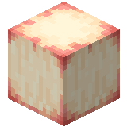

About
Blood kelp is aquatic algae found in all oceans. These plants feature blood kelp seed cluster growing on their plants. These seed clusters can be harvested from these plants and are used to plant more.
Blood kelp are items that can be dried and eaten.
Blood kelp seed clusters are items that can be used to plant more blood kelp plants.
Natural generation
Blood kelp plants generate in both modded and unmodded ocean biomes.
Any biomes added to the c:is_ocean tag are also supported.
Usage
Crafting Recipe

Craft a blood kelp seed cluster bag by filling the crafting table with nine blood kelp seed clusters.
Craft a blood kelp crate by filling the crafting table with nine blood kelp.
Craft nine blood kelp from a blood kelp crate by placing it in a crafting table in any arrangement.
Craft a blood kelp seed cluster bag by filling the crafting table with nine blood kelp seed clusters.
Craft nine blood kelp seed clusters from a blood kelp seed cluster bag by placing it in a crafting table in any arrangement.


Cook a blood kelp item in a furnace or smoker to make dried blood kelp.
Farming
Growing
A newly planted blood kelp block varies randomly between age 0 and 24 and will not have a seed cluster. Blood kelp grows naturally if there is an available water block above it and if it's not reached age 25. Blood kelp does not require light to grow. Every time a blood kelp grows the newly added block increases its age by 1 and has a random chance of growing a seed cluster. If the topmost block is broken the age will be randomized between 0 and 25. Thereafter, the blood kelp will continue growing until it reaches age 25.
Each time it receives a random tick, blood kelp has a 14% chance of growing. At the default random tick speed (3), each plant grows on average every 9752 game ticks (487.6 seconds), similarly to normal kelp.
Shears
Using shears on a blood kelp block prevents further growth by setting its age to 25. If the shift key is held when targeting a blood kelp block with a seed cluster. The blood kelp will be set to age 25 instead of harvesting it.
Bone Meal
Bone meal can be used to grow blood kelp by 1 block on each use. The new block has a random chance to grow a new seed cluster.
Composting
Placing a blood kelp or blood kelp seed cluster into a composter has a 30% chance of raising the compost level by 1. Blood kelp crates and blood kelp seed cluster bags cannot be composted.
Technical
Configuration
- In-Game Screen Name: Enable Blood Kelp
- Config File Key:
enable_blood_kelp - Default:
true/Yes
Determines whether blood kelp plants, blood kelp, blood kelp crates, blood kelp seed clusters, blood kelp seed cluster bags, dried blood kelp, and dried blood kelp blocks are enabled.
true/Yes: They are enabled.false/No: They are disabled and hidden.
Blood Kelp


| Renewable | Yes (Seed Clusters) |
| Stackable | Yes (64) |
| Biome | Oceans |
| Stackable | Yes (64) |
| Tool | Any tool |
| Blast Resistance | 0 |
| Hardness | 0 |
| Luminous | Yes (10 if it has seed clusters) |
| Transparent | Yes |
| Note block instrument | Default (Harp) |

| Renewable | Yes (Crafting) |
| Stackable | Yes (64) |
| Tool | Any tool |
| Blast Resistance | 0.3 |
| Hardness | 0.3 |
| Luminous | Yes (15) |
| Transparent | No |
| Note block instrument | Hat |
| Sulfur cube archetype | Slow Bouncy |
| Renewable | Yes (Crafting) |
| Stackable | Yes (64) |
| Tool | Any tool |
| Blast Resistance |
|
| Hardness |
|
| Luminous |
|
| Transparent | No |
| Flammable | Yes |
| Catches fire from lava | Yes |
| Note block instrument |
|
| Sulfur cube archetype | Fast Flat |